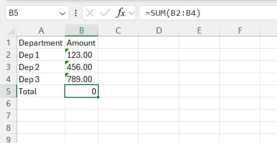
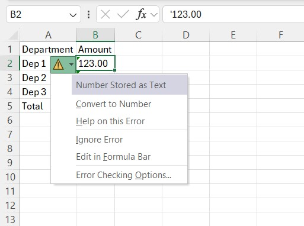
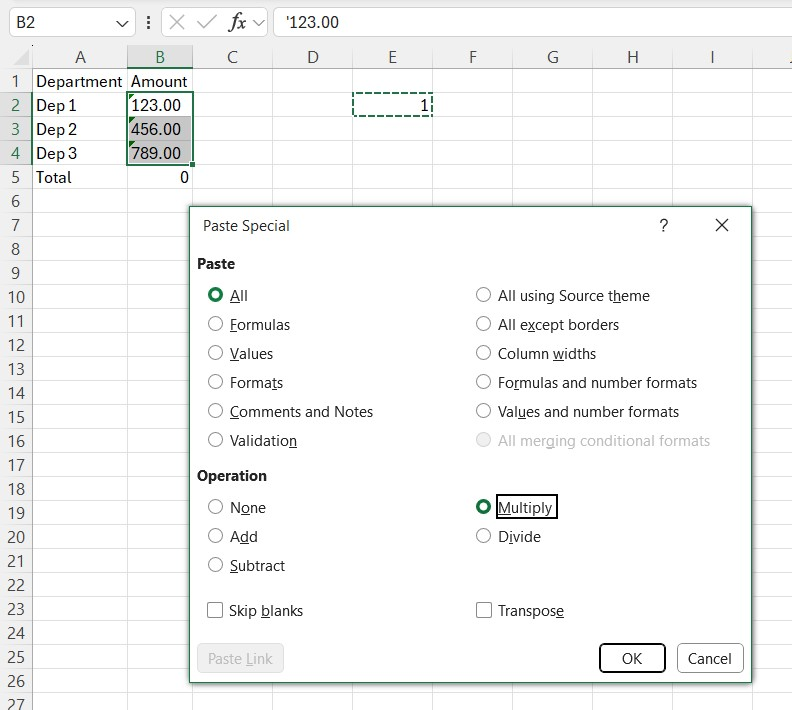
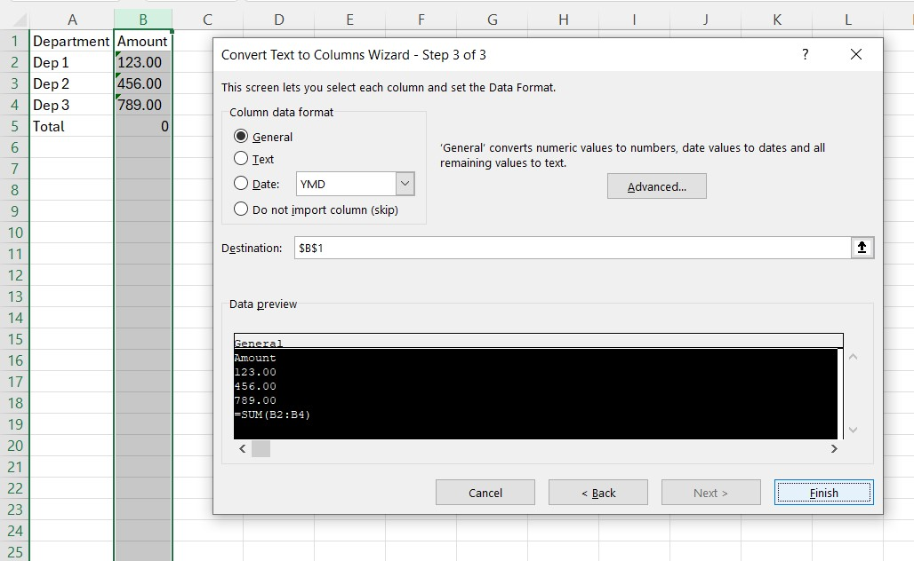

Converting text numbers to numeric values
Why numbers become text in Excel and several ways to convert them back.
Numbers copied from a web page, a PDF, an accounting system or a CSV often arrive as text. They look normal, but SUM ignores them, sorting puts 100 before 20, and VLOOKUP refuses to match them with real numbers.

How to recognise text numbers
- They are left-aligned by default while real numbers are right-aligned.
- A small green triangle appears in the corner of the cell.
- The status bar shows only Count for the selection, not Sum.
=ISNUMBER(A1)returnsFALSE.
Quick fixes in Excel
The green triangle. Select the cells, click the warning icon that appears and choose Convert to Number. It works only when Excel flags the cells.

Paste Special. Type 1 in an empty cell and copy it. Select the text numbers, choose Paste Special → Multiply. Excel has to do arithmetic on each value, so it converts them.

Text to Columns. Select one column, open Data → Text to Columns and click Finish right away. This re-parses the values and converts numbers and dates. It is a fast trick for a single column.

A formula. =VALUE(A1) or the shorter =--A1 returns a number. If the source has odd spaces, combine it with cleaning: =VALUE(TRIM(SUBSTITUTE(A1,CHAR(160),""))). Non-breaking spaces (CHAR(160)) are common in data from websites and thousand separators in Russian or French formats, and TRIM does not remove them.
Things that go wrong
- Decimal separator.
1,5is text on a system that expects1.5. Replace the separator first, or useNUMBERVALUE(A1, ",", " ")to state the decimal and group separators explicitly. - Leading apostrophe. It is invisible in the cell but marks it as text. Paste Special → Multiply handles it.
- Minus at the end. Some systems export negative numbers as
100-. Convert with=IF(RIGHT(A1)="-",-LEFT(A1,LEN(A1)-1),A1). - Leading zeros. Phone numbers, postal codes and product codes should stay text. Converting them removes the zeros for good, so check before you convert a whole column.
- Cell format. Changing a cell's format to Number does not convert what is already inside. You need to re-enter the value (F2, Enter) or use one of the methods above.
With the add-in
The Parse Numerics command converts the selected text cells to numbers in one step, including the cases with non-breaking spaces. If the result is wrong, Undo Last Action restores the previous values.
The add-in command for this: Parse Numerics.